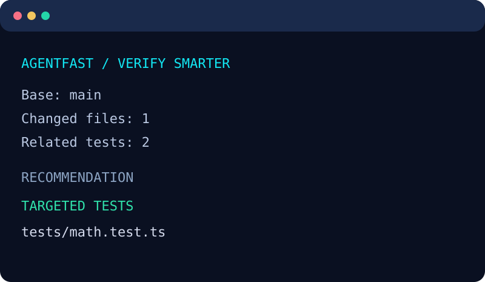
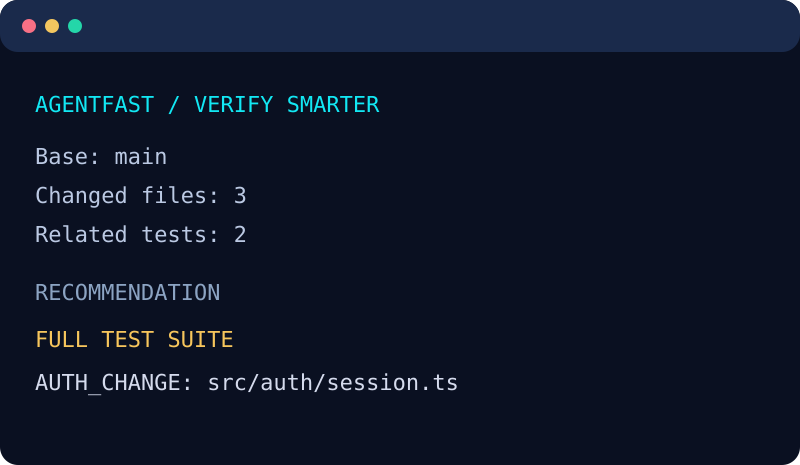

The problem isn't just running fewer tests
After a coding agent edits a file, you need quick feedback. Re-running the entire test suite after every small local edit can be frustrating. But choosing one nearby test just because it looks relevant can miss changes in authentication, billing, shared configuration, database migrations or consumers that static analysis couldn't discover.
The useful question is: how much confidence do we have in the dependency graph, and what is the risk of the modified code? A conservative tool should say “run everything” when it cannot answer that question confidently.
The policy: A targeted recommendation is for fast development feedback. It never replaces required CI before merging, releasing or deploying.
A focused change versus a risky change
Scenario A: A small math module changes. A test directly imports that module and there are no unresolved local dependencies. AgentFast may suggest the related test file for immediate feedback.
Scenario B: A file under an authentication-sensitive path changes. Even if a nearby test exists, AgentFast recommends the full suite because of the risk classification.


These images are styled representations of the included demo, not benchmarks or proof of faster execution.
Try both outcomes on your own machine
AgentFast is a free, MIT-licensed Node.js CLI. It requires Git and Node.js 20+. It does not call an LLM API, upload your source code or depend on a remote account.
git clone https://github.com/Brinkhagen/agentfast.git
cd agentfast
npm ci
npm run verify
node examples/demo.mjsThe demo creates a temporary disposable Git repository, simulates a focused module change and then an authentication-related change, prints the two recommendations and cleans up. You don't need to risk an existing project.
AgentFast v0.4 adds conservative npm/yarn workspace package imports and static Astro component imports. Analysis remains file-level, not symbol-level; it does not guarantee a measurable CI speedup. See supported patterns and limitations.
To run the CLI on your own repository, install the versioned package from GitHub Releases or run npm link from the checkout and use agentfast check --base HEAD in the target Git project.
What the tool actually analyzes
AgentFast reads Git changes and applies transparent path-risk rules. It traverses straightforward relative JS/TS imports to find potentially related tests, emits reason codes, and falls back to full testing for sensitive paths, structural changes and incomplete analysis. Version 0.2 adds Markdown and JSON reports for humans and CI summaries.
agentfast check --base HEAD --format markdown
agentfast check --base origin/main --json
agentfast check --format markdown --output report.md--output intentionally refuses to overwrite an existing file. The output is advice: the CLI does not execute tests.
Where it may be wrong
AgentFast is a public beta. Its static import analysis cannot resolve every TypeScript alias, workspace dependency, dynamic import or framework-specific convention. It isn't a code coverage engine, a security scanner or a replacement for test runner features.
Vitest already provides native changed/related test selection. Use it if that's appropriate for your repository. AgentFast's distinct experiment is the visible, conservative risk-policy layer around test scope. No speedup percentages or production adoption claims have been measured or established.
Help challenge the assumptions
The most useful beta feedback isn't “looks cool.” It is a reproducible case where the tool recommended too few tests, where its fallback was unnecessarily broad, or where the setup was confusing.
Have 10 minutes? Break the beta.
Run the disposable demo or try a sanitized local Git change. Tell us the operating system, Node version, the recommendation you expected, and what happened instead. No stars, favorable reviews or registration are required.